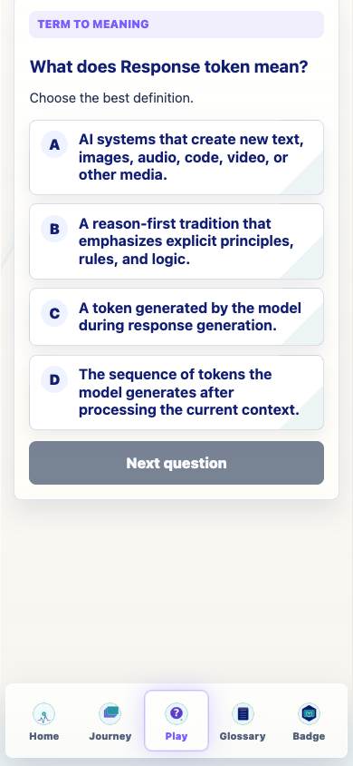
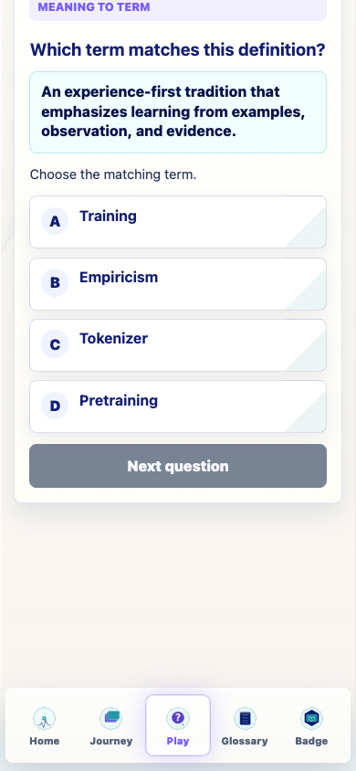
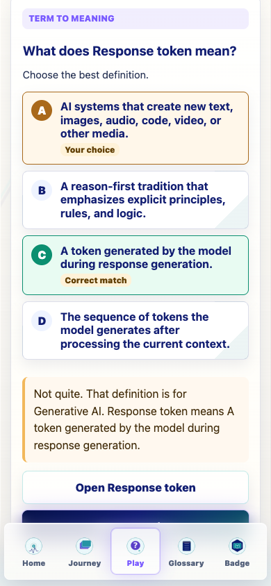
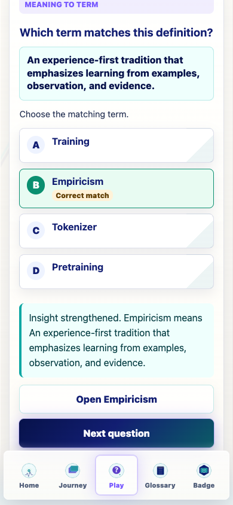
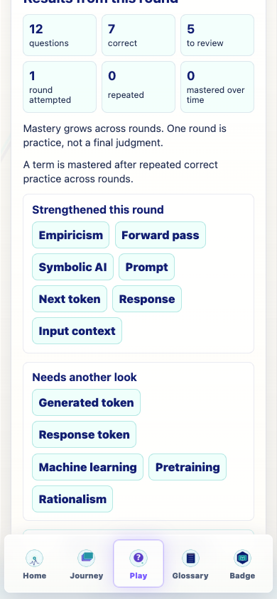
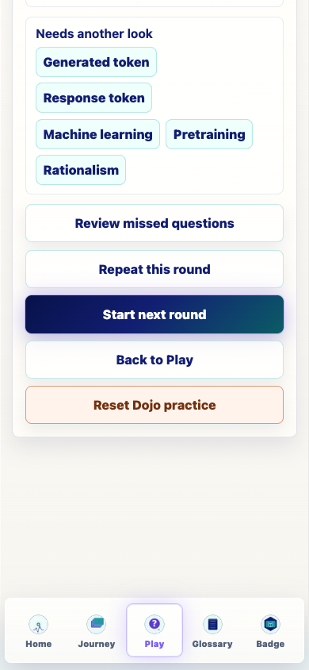
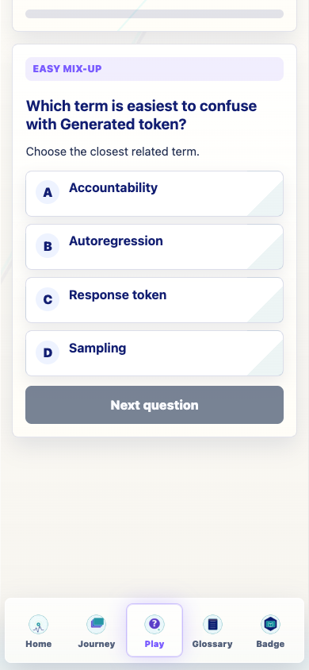
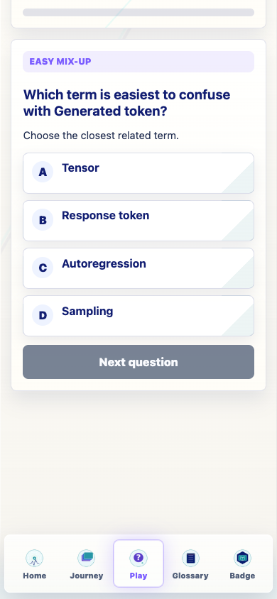
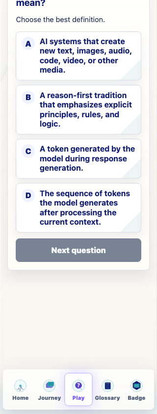
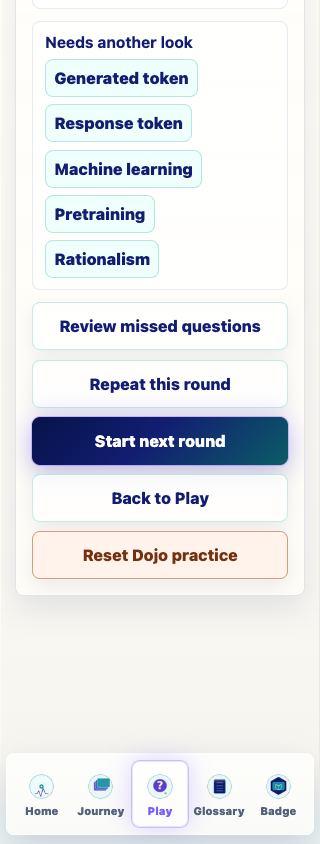

Term To Definition
Definitions only; no term labels inside the answer choices.

Prompt Life v0.22
Date: 2026-06-07
This report wraps the implementation summary, verification results, and representative screenshots for the Glossary Dojo V2 pass.
What does [TERM] mean? and show definitions only.Choose the closest related term.Builds passed with the existing Vite large-chunk warning. Browser QA used an isolated profile and reported zero Journey progress mutations.
Definitions only; no term labels inside the answer choices.

The definition appears once; choices are terms only.

Feedback names the represented wrong term and the correct term.

Correct feedback starts with Insight strengthened.

Shows questions, correct, to review, rounds attempted, repeated, and mastered over time.

Review missed, repeat this round, and start next round are available from results.

Starts a focused round from missed question specs.

Starts the stored question set again with repeat count 1.



AI means AI is....